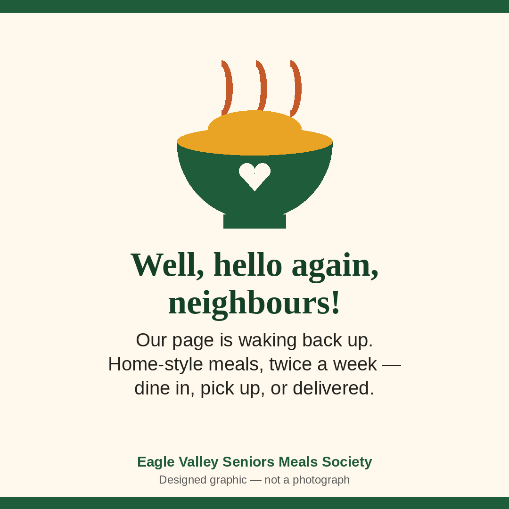
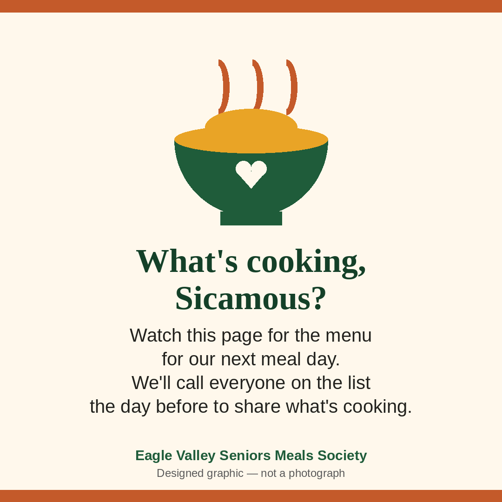
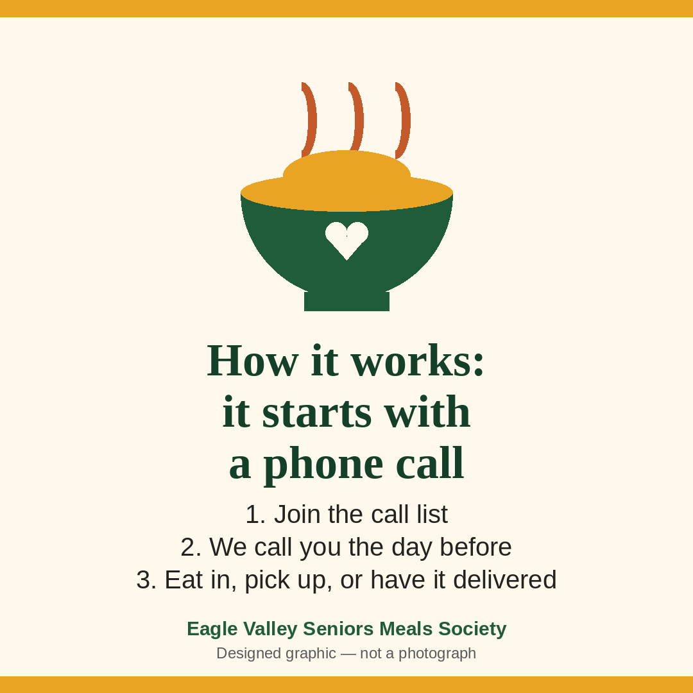
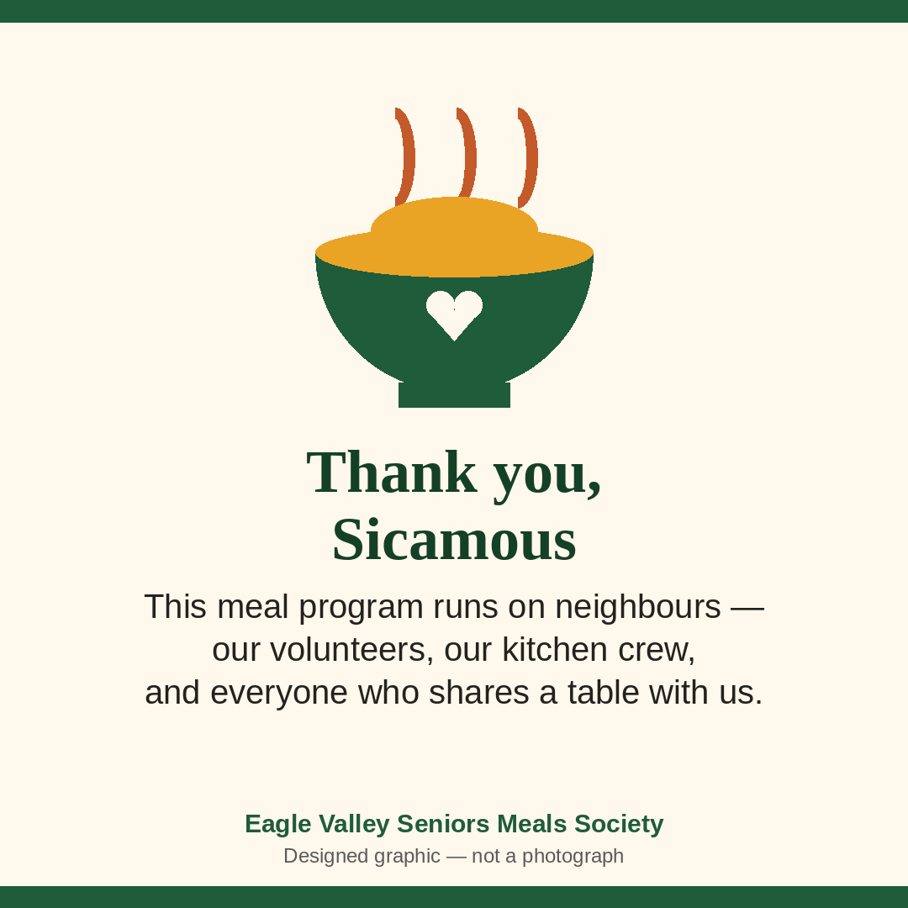

Pulse HQ · Postbox
Eagle Valley Seniors Meals Society
Your starter Facebook posts from Pulse HQ — newest delivery first. Tap Copy caption, tap Save image, and post when you're ready.
Post 1 — Welcome back
Delivered 2026-10-15 · Starter post pack

Well, hello again, neighbours!
It's been a while since this page had news to share, so let's fix that. We're the Eagle Valley Seniors Meals Society — your non-profit community meal program right here in Sicamous — and this page is waking back up.
Twice a week, our kitchen crew and volunteers cook a home-style lunch, and the day before, we call everyone on our list to share the menu and ask: eat in with us, pick up, or have it delivered? Good food, a friendly voice, and neighbours looking out for neighbours — that's the whole idea.
2026 has been a year of change for us, including a move after our longtime home at The Haven closed — but the cooking, the calls, and the company have carried on, and so has our search for a permanent kitchen to call our own.
Follow this page for meal news and community updates, and if you — or a parent or neighbour of yours — could use a good meal and a friendly check-in, send us a message right here. We'd love to hear from you.
#Sicamous #EagleValley #SeniorsMeals #CommunityMeals #Shuswap
Post 2 — What's cooking (menu post)
Delivered 2026-10-15 · Starter post pack

What's cooking, Sicamous?
Here's what's on the menu for our next meal day:
Pork roast with stuffing
Mashed potatoes and gravy
Roasted corn
Coleslaw
Eat in with us, pick yours up, or have it delivered — if you're on our call list, we'll ring you the day before to share the menu and take your choice. New here and want to join the list? Send us a message right on this page and we'll get you started.
Come hungry, leave happy. See you at the table, neighbours.
#Sicamous #EagleValley #CommunityMeals #HomeStyleCooking #MealDelivery
This one is your reusable menu post — the example below is filled in with a past menu. Swap in the real dishes for the week before posting.
Post 3 — How it works
Delivered 2026-10-15 · Starter post pack

Wondering how our meals work? It's simple — and it starts with a phone call.
Here's how it goes:
First, get on our call list. If you're new, send us a message right here on this page and we'll help you join. Our table is open to everyone in the community — you don't have to be a senior to enjoy a meal with us.
Then, the day before each meal day, we call everyone on the list. We tell you what's cooking, and you tell us how you'd like it: sit down and eat in with good company, pick it up to take home, or have it delivered right to your door.
On meal day, all that's left is the good part — a home-style lunch and, if you're dining in, a room full of neighbours to share it with.
Twice a week, that's a whole lot of plates — in February 2026 we were serving up to 60 meals twice a week, with up to 36 folks dining in and the rest going out for pick-up and delivery. However you take yours, that friendly day-before call is part of the service. Around here, a meal is also a check-in.
Questions? Message us anytime. We'd love to get you on the list.
#Sicamous #EagleValley #SeniorsMeals #MealDelivery #NeighboursHelpingNeighbours
Post 4 — Community thank-you
Delivered 2026-10-15 · Starter post pack

A big, heartfelt thank-you, Sicamous.
This little meal program runs on neighbours. It runs on the volunteers who show up in the kitchen twice a week — many of them seniors feeding seniors. It runs on everyone who has helped us move, settle, and keep the pots on through a year when our longtime home at The Haven closed and we had to find our feet all over again. And it runs on every one of you who orders a meal, shares our posts, or tells a neighbour about us.
In February 2026, this community was helping us serve up to 60 meals twice a week. Every one of those meals was also a conversation, a check-in, and a reminder that nobody in the Eagle Valley eats alone unless they want to.
So from all of us at the Eagle Valley Seniors Meals Society: thank you for keeping this table full — of food, and of each other.
If you'd like to lend a hand, join the call list, or just say hello, send us a message right here. There's always room for one more at our table.
#Sicamous #EagleValley #ThankYou #CommunityMeals #Volunteers